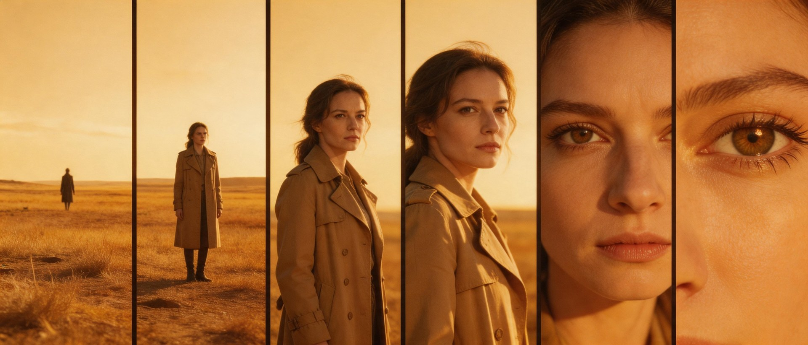
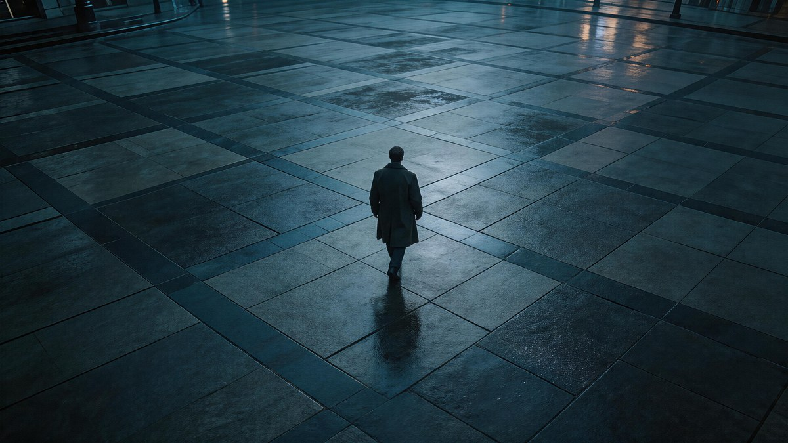

在按下录制键之前,你必须先学会"看"。镜头不是相机的属性,而是一种观察的语法。本章建立你的视觉词典。
景别是观众与被摄主体的心理距离。镜头越远,观众越冷静客观;镜头越近,情绪越紧张私密。导演的第一个决定,永远是"我让观众站在哪里"。

镜头的高度决定了观众与角色的权力关系。在你抬起相机或蹲下之前,先问自己:这个画面应该让人觉得谁更强?
"摄影机的角度,就是导演的态度。"
—— 电影学院第一堂课与角色视线平行。中立、真实、共情。纪录片与日常对话的默认机位。
角色低于镜头。带来脆弱、孤独、被审视感。失败、迷茫、童年常用。

近乎垂直俯视。强烈的抽离与命运感。上帝视角、地图式叙事、群像调度。从一方肩后看另一方。对话中的视点建立,暗示倾听与权力博弈。
当两个角色在画面里对话,他们之间存在一条看不见的线——这就是轴线。摄影机必须始终待在轴线的同一侧,否则角色的"左/右"会瞬间反转,观众会失去方向。
当你故意越过轴线,那是一种暴力——它制造迷失感、关系破裂感、心理崩塌。轴线不是用来遵守的,是用来知道何时打破的。
合法越轴的方法:① 主体移动带过轴线 ② 加入中性机位 ③ 推近至特写后切换 ④ 直接打破——表达混乱本身。